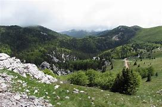
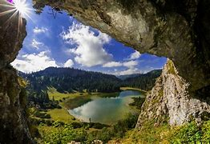

A túrázás is egy nagyon hangulatos és hasznos
lehetősége az idő elütésére. Rengeteg szép helyen lehet megnézni.

Gyönyörű a természet, ahol lehet járni. Nagyszerű gyalog, biciklivel,
vagy akár még autóval megközelíthető helyeket is bejárni.